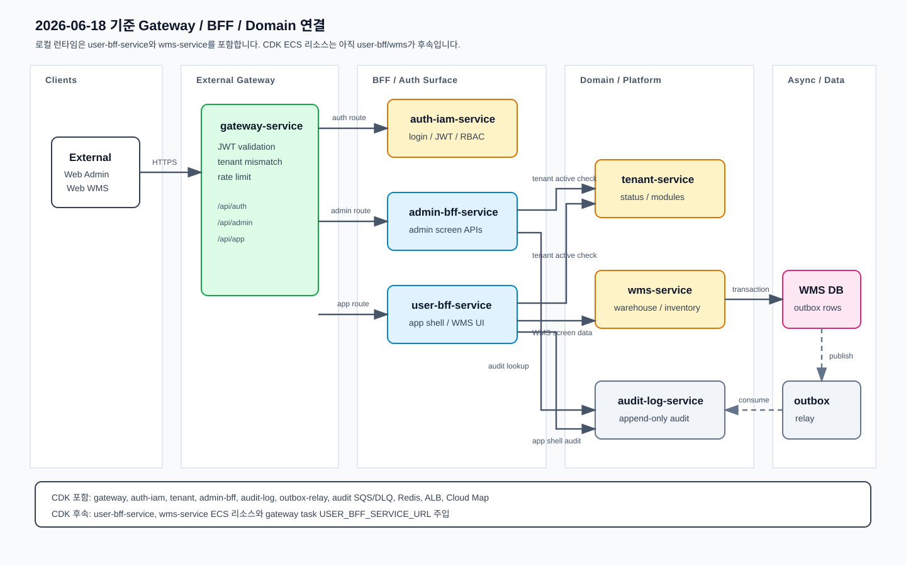

Infra · Architecture Snapshot
아키텍처/인프라 상태
2026-06-18 기준 gateway, BFF, domain/platform service 연결 상태를 정리합니다.
로컬 런타임은 user-bff-service와 wms-service를 포함하지만, AWS CDK ECS 리소스는 아직 두 서비스를 포함하지 않습니다.
오늘 변경 요약
| Gateway route | /api/auth/**, /api/admin/**, /api/app/** 세 route group을 사용합니다. |
|---|---|
| Gateway upstream | auth-iam-service, admin-bff-service, user-bff-service만 직접 호출합니다. |
| BFF downstream | Admin BFF는 auth-iam, tenant, audit-log를 호출하고 User BFF는 auth-iam, tenant, wms, audit-log를 호출합니다. |
| Domain/Platform 연결 | tenant-service, wms-service, audit-log-service, outbox-relay-service는 BFF 또는 내부 worker 경로에서 사용합니다. |
| CDK 차이 | CDK stack은 아직 user-bff-service와 wms-service ECS 리소스를 만들지 않고, gateway task env에도 USER_BFF_SERVICE_URL을 주입하지 않습니다. |
구조도

CDK 포함 범위
CDK 포함
gateway-service, auth-iam-service, tenant-service, admin-bff-service, audit-log-service, outbox-relay-service, audit event SQS queue/DLQ, Redis, ALB, Cloud Map.
CDK 미포함
user-bff-service ECS/ECR/Cloud Map/SG, wms-service ECS/ECR/Cloud Map/SG, RDS/Aurora, Route53 record, EventBridge bus, S3.
후속 CDK 작업
user-bff/wms 리소스 추가, gateway task env USER_BFF_SERVICE_URL 주입, service-specific deployment workflow 확장.
로컬 연결 검증 기준
| Gateway config | apps/gateway-service/src/config/app.config.ts는 route key auth, admin, app을 정의합니다. |
|---|---|
| Gateway env | docker/env/gateway-service/.env.*에는 AUTH_IAM_SERVICE_URL, ADMIN_BFF_SERVICE_URL, USER_BFF_SERVICE_URL이 있습니다. |
| Compose | docker/local/docker-compose.yml는 admin-bff-service와 user-bff-service를 포함하고, user-bff-service는 audit-log-service health 이후 시작합니다. |
| Test scenario | docs/test-scenarios/system-test-scenarios.html의 GWBFF-CONN-001 ~ GWBFF-CONN-006로 연결 정합성을 검증합니다. |
검증
docker compose -f docker/local/docker-compose.yml config --quiet
pnpm --filter gateway-service typecheck
pnpm --filter user-bff-service typecheck이 문서는 실제 AWS cdk deploy 결과가 아니라 현재 repository 코드와 로컬 compose 기준의 아키텍처 스냅샷입니다.